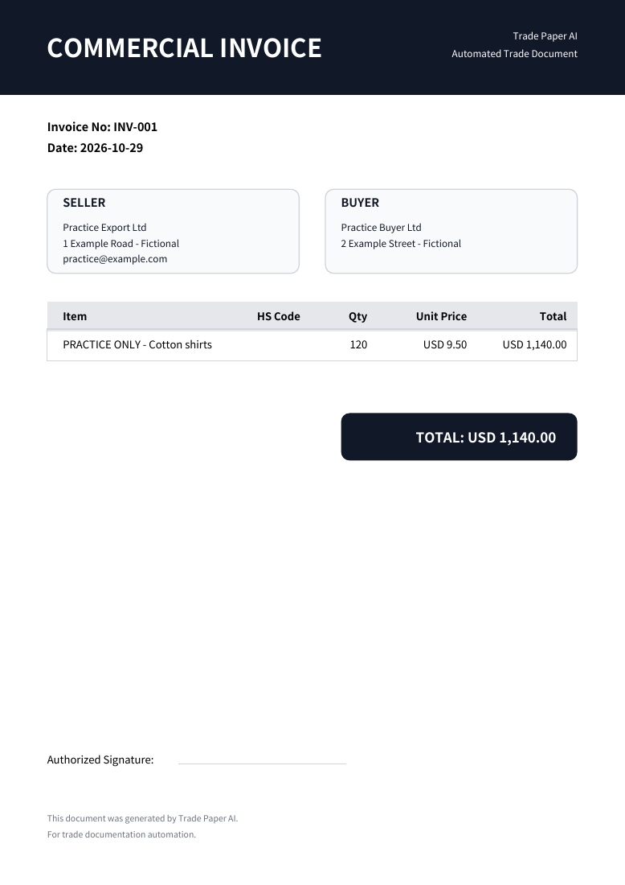
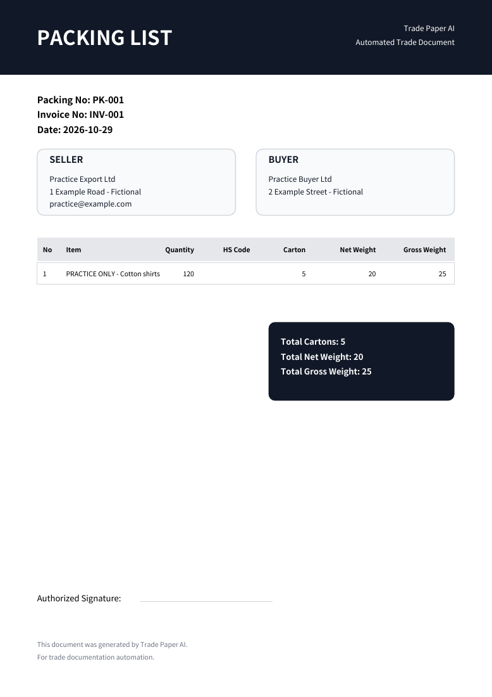

Invoice
금액 확인: USD 1,140
PDF 열기 ↗
가상 출하 · 실제 출력 예시
다시 입력하기 전에 결과부터 보세요. 가상 CSV 주문서를 읽어 만든 Invoice와, 포장 정보를 확인해 저장한 Packing List입니다.
완성된 두 문서를 직접 열어 보세요품명·수량·단가를 담은 CSV 파일입니다. Excel에서도 열 수 있습니다.
Practice Export Ltd → Practice Buyer Ltd · USD
| 품목 | 수량 | 단가 | 금액 |
|---|---|---|---|
| PRACTICE ONLY - Cotton shirts | 120 PCS | 9.50 | 1,140.00 |
원본과 초안을 대조한 뒤 Invoice를 저장합니다. Packing List로 이어가 아래 포장 수치를 직접 확인·입력합니다. 파일 하나로 포장까지 자동 확정하지 않습니다.
금액 확인: USD 1,140
PDF 열기 ↗
수량·포장 확인: 120개 · 5박스
PDF 열기 ↗
파일 가져오기·저장에는 무료 계정과 로그인이 필요합니다. 회사 정보 확인 후 파일을 선택하세요. 무료 월 5문서이며 Invoice와 Packing List는 각각 한 문서입니다.
최대 8MB · PDF 5쪽 · 품목 100개. 복잡한 서식과 사진은 수정이 필요할 수 있습니다. 원본과 수량·단가를 확인하고 실제 박스·중량을 검토하세요. 기존 PDF는 수정해도 자동 갱신되지 않습니다.가상 자료로 만든 제품 출력 예시입니다. 실제 고객 사례나 실제 출하에 사용할 서류가 아닙니다.